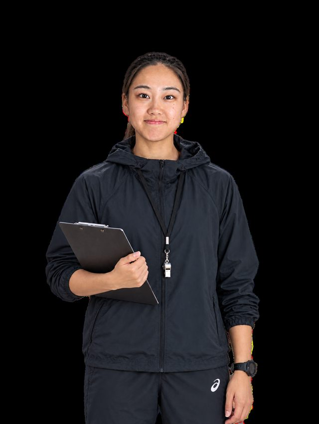

POINT
この教室の3つのポイント
01
医療のプロと「体づくり」
阪堺病院SCAのスタッフが、ケガをしにくい体の使い方や、走るための柔軟性・バランスを指導します。
02
陸上指導員が「走りの技術」
姿勢・腕振り・足の運び・スタートなど、速く走るためのコツを、一人ひとりの走りを見ながら伝えます。
03
伸びが「見える」
測った記録は成長記録アプリ「のびしろノート」に残します。前回からの伸びが、子どもにも保護者にも分かります。
PROGRAM
1回の流れ（例）
内容は参加者の学年・人数に合わせて調整します。
- 1
あいさつ・ウォームアップ
その日のテーマを共有し、体を温めます。
- 2
体づくり（阪堺病院SCA）
柔軟性・バランス・体幹など、走るための体の準備。ケガ予防の考え方も学びます。
- 3
走りの基本（陸上指導員）
姿勢・腕振り・足の運びを、ドリルで一つずつ身につけます。
- 4
スタート・加速の練習
運動会やかけっこで差がつく、スタートと加速のコツ。
- 5
記録・ふりかえり
タイムなどを測って、のびしろノートに記録。次回までの課題を確認します。
COACH
指導するのは

走りの技術
岐部 あゆか
ウマクスクール 陸上指導員
走り方教室のメイン指導員。子どもたち一人ひとりの走りを見て、速く走るためのコツを伝えます。
体づくり
阪堺病院 SCA
連携パートナー
医療機関のスタッフが、体づくりとケガの予防を担当。体力測定と成長の記録にも関わります。
INFO
開催概要
- 対象
- 小学生中心（中学生も歓迎）
- 体験会
- 2027年1月開催予定 日程・会場は決まり次第お知らせ
- 参加費
- 決まり次第お知らせ
- 持ち物
- 運動しやすい服装・運動靴・飲み物
- 指導
- 岐部あゆか指導員（陸上）／阪堺病院SCA（体づくり）
FAQ
よくある質問
足が遅くても参加できますか？
もちろんです。「今より速く走れるようになりたい」という気持ちがあれば大丈夫です。走り方は練習で変わります。
ほかのスポーツをしていても参加できますか？
はい。走る力はサッカー・野球・バスケットボールなど、多くのスポーツの土台になります。
のびしろノートとは何ですか？
ウマクスクールの成長記録アプリです。測定した記録を残し、伸びをグラフなどで確認できます。保護者の方には記録カードをお届けする予定です。
体験・お問い合わせはこちらから
ウマクスクールのお申し込みフォームに移動します。
「走り方教室」にチェックが入った状態で開きます。日程などが決まり次第、ご連絡します。
メールでのお問い合わせ：Umaku.school@gmail.com